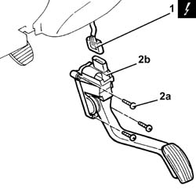
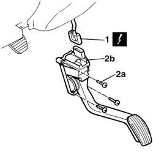

1068A20 accelerator pedal with built-in potentiometer - r r
- Path
- Procedures > 10 ENGINE > 1068 ACCELERATOR CONTROLS > 1068A accelerator pedal control > 1068A20 accelerator pedal with built-in potentiometer - r r
- Kind
- repair procedure (removal / refitting; the operation number is the code)
- Applies to
- engines: 1.4 8v, 1.6 16v, 1.9 JTD 8V, 1.9 DIESEL; all production periods
- Interactive page
- https://sloeber94.github.io/elrnDB-fDbl/en/#/2584362
Applies to: engines: 1.4 8v, 1.6 16v; all production periods
 Removing
Removing
 Refitting
RefittingEnsure that the ignition key is in the stop position, then disconnect the battery negative terminal.
 | Name | Connector |
|---|---|---|
- | Battery |
1. Disconnect the electrical connection for the accelerator pedal with built-in potentiometer.
Name | Connector | |
|---|---|---|
1 | Accelerator pedal potentiometer |
2. Undo the bolts (2a) and remove the accelerator pedal with potentiometer incorporated (2b).

Applies to: engines: 1.4 8v, 1.6 16v; all production periods
Refitting
RemovingConnect the electrical connection to the accelerator pedal with built-in potentiometer.
Place the accelerator pedal with potentiometer incorporated back in its housing and secure it using the bolts.
Connect the negative (-) battery terminal.
Applies to: engines: 1.9 DIESEL; all production periods
Removing
RefittingDisconnect the battery negative terminal.
1. Disconnect the electrical connection for the accelerator pedal potentiometer.
2. Undo the fixing bolts (2a) and remove the accelerator pedal (2b).
| Name | Connector |
|---|---|---|
1 | Accelerator pedal potentiometer |

Applies to: engines: 1.9 DIESEL; all production periods
Refitting
RemovingConnect the electrical connection for the accelerator potentiometer.
| Name | Connector |
|---|---|---|
- | Accelerator pedal potentiometer |
Fit the pedal and tighten the fixing bolts.
Connect the battery negative terminal.
Applies to: engines: 1.9 JTD 8V; all production periods
Removing
RefittingEnsure that the ignition key is in the stop position, then disconnect the battery negative terminal.
| Name | Connector |
|---|---|---|
- | Battery |
1. Disconnect the electrical connection for the accelerator pedal with built-in potentiometer.
| Name | Connector |
|---|---|---|
1 | Accelerator pedal potentiometer |
2. Undo the bolts (2a) and remove the accelerator pedal with potentiometer incorporated (2b).
Applies to: engines: 1.9 JTD 8V; all production periods
Refitting
RemovingConnect the electrical connection to the accelerator pedal with built-in potentiometer.
Refit the accelerator pedal with integrated potentiometer in its seating and secure it with its bolts.
Connect the battery terminal (-).
Applies to: engines: 1.4 8v; all production periods
Removing
Refitting- Disconnect the negative battery terminal.
Op. 5010C55 LOWER AIR DIFFUSER (ONE) LH OR RH - R.R
(left side).
1. Disconnect the electrical connection for the accelerator pedal.
Description | Connector | |
|---|---|---|
1 | Accelerator pedal potentiometer |
2. Undo the bolts (2a) and remove the accelerator pedal (2b).
Applies to: engines: 1.4 8v; all production periods
Refitting
Removing- Place the accelerator pedal back in its housing and secure it using the bolts.
- Connect the electrical connection for the accelerator pedal.
Op. 5010C55 LOWER AIR DIFFUSER (ONE) LH OR RH - R.R
(left side).
- Connect the negative battery terminal.